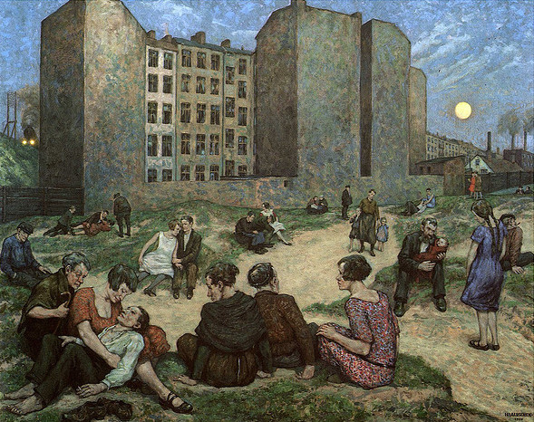

Used to be an airport, now a hang-out-space community-garden windsurfing-wonderland.
Used to be an airport, now a hang-out-space community-garden windsurfing-wonderland.15 min bike ride from the place called home, via a park with an outdoor movie theatre (eg - highly recommended B-movie). "No idea, but it looks cool!" - Most of the time walking around Berlin.
recently: a bike, locked upside down to the wrong side of a bridge. guy walking with us points it out, i tell him it's been like that for at least three days. His question: "so, is it Art?"
Nobody Knows, Everybody Rejoices Lovely summer evenings
Hans Baluschek ('28) painting on display at Bg)